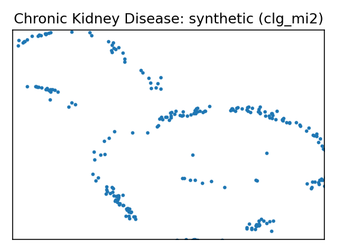
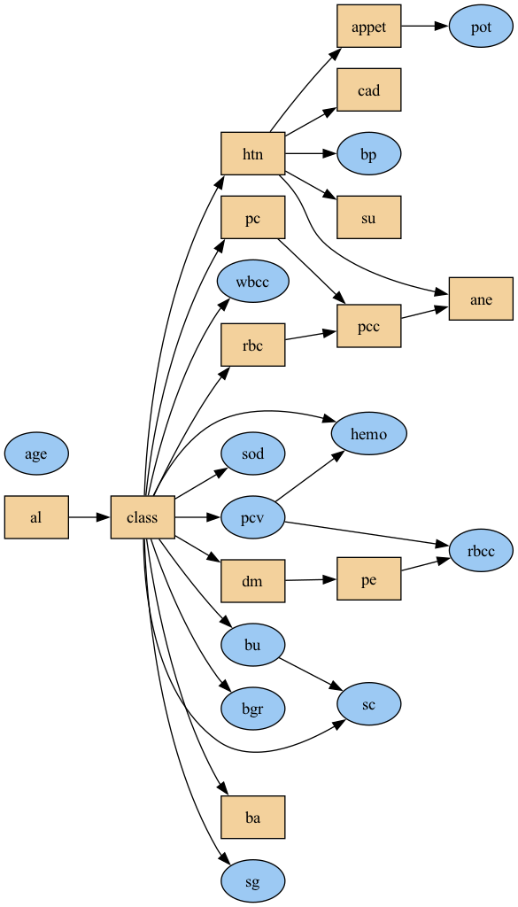
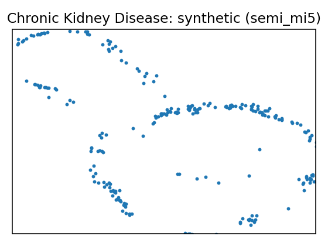
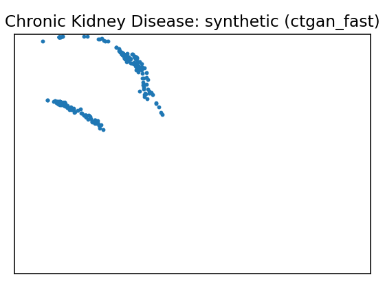
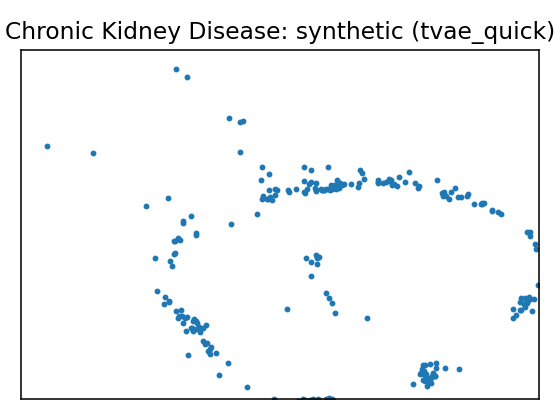

Data Report — Chronic Kidney Disease
Source: UCI dataset 336
SemMap JSON-LD: dataset.semmap.json · RDFa HTML
Overview
| Metric | Value |
|---|---|
| Dataset | Chronic Kidney Disease |
| Source | UCI dataset 336 |
| Rows | 158 |
| Columns | 25 |
| Discrete | 11 |
| Continuous | 14 |
| SemMap | SemMap JSON-LD SemMap HTML |
| Missingness | modeled 24 of 25 (seed 42) |
Variables and summary
| variable | inferred | dist |
|---|---|---|
| age | continuous | 49.5633 ± 15.5122 [6, 39.25, 50.5, 60, 83] |
| bp | continuous | 74.0506 ± 11.1754 [50, 60, 80, 80, 110] |
| sg | continuous | 1.0199 ± 0.0055 [1.005, 1.02, 1.02, 1.025, 1.025] |
| al | continuous | 0.7975 ± 1.4131 [0, 0, 0, 1, 4] |
| su | continuous | 0.2532 ± 0.8134 [0, 0, 0, 0, 5] |
| rbc | discrete | normal: 140 (88.61%) |
| pc | discrete | normal: 129 (81.65%) |
| pcc | discrete | notpresent: 144 (91.14%) |
| ba | discrete | notpresent: 146 (92.41%) |
| bgr | continuous | 131.3418 ± 64.9398 [70, 97, 115.5, 131.75, 490] |
| bu | continuous | 52.5759 ± 47.3954 [10, 26, 39.5, 49.75, 309] |
| sc | continuous | 2.1886 ± 3.0776 [0.4, 0.7, 1.1, 1.6, 15.2] |
| sod | continuous | 138.8481 ± 7.4894 [111, 135, 139, 144, 150] |
| pot | continuous | 4.6367 ± 3.4764 [2.5, 3.7, 4.5, 4.9, 47] |
| hemo | continuous | 13.6873 ± 2.8822 [3.1, 12.6, 14.25, 15.775, 17.8] |
| pcv | continuous | 41.9177 ± 9.1052 [9, 37.5, 44, 48, 54] |
| wbcc | continuous | 8475.9494 ± 3126.8802 [3800, 6525, 7800, 9775, 26400] |
| rbcc | continuous | 4.8918 ± 1.0194 [2.1, 4.5, 4.95, 5.6, 8] |
| htn | discrete | yes: 34 (21.52%) |
| dm | discrete | no: 130 (82.28%) yes: 28 (17.72%) no: 0 (0.00%) |
| cad | discrete | yes: 11 (6.96%) |
| appet | discrete | good: 139 (87.97%) |
| pe | discrete | yes: 20 (12.66%) |
| ane | discrete | yes: 16 (10.13%) |
| class | discrete | notckd: 115 (72.78%) ckd: 43 (27.22%) ckd: 0 (0.00%) |
Missingness model
- Columns with learned missingness: 24 of 25
- Columns without missingness: 1| Column | Missing rate | Missing % | |:---------|---------------:|------------:| | rbc | 0.38 | 38 | | rbcc | 0.3275 | 32.75 | | wbcc | 0.265 | 26.5 | | pot | 0.22 | 22 | | sod | 0.2175 | 21.75 | | pcv | 0.1775 | 17.75 | | pc | 0.1625 | 16.25 | | hemo | 0.13 | 13 | | su | 0.1225 | 12.25 | | sg | 0.1175 | 11.75 | | al | 0.115 | 11.5 | | bgr | 0.11 | 11 | | bu | 0.0475 | 4.75 | | sc | 0.0425 | 4.25 | | bp | 0.03 | 3 | | age | 0.0225 | 2.25 | | ba | 0.01 | 1 | | pcc | 0.01 | 1 | | dm | 0.005 | 0.5 | | cad | 0.005 | 0.5 | | htn | 0.005 | 0.5 | | appet | 0.0025 | 0.25 | | ane | 0.0025 | 0.25 | | pe | 0.0025 | 0.25 |
Fidelity summary
| model | backend | disc_jsd_mean | disc_jsd_median | cont_ks_mean | cont_w1_mean | privacy_overlap | downstream_sign_match |
|---|---|---|---|---|---|---|---|
| metasyn | metasyn | 0.0539 | 0.0557 | 0.16 | 157.065 | ||
| clg_mi2 | pybnesian | 0.0857 | 0.058 | 0.1592 | 198.246 | ||
| semi_mi5 | pybnesian | 0.0857 | 0.058 | 0.1592 | 198.246 | ||
| ctgan_fast | synthcity | 0.2545 | 0.2495 | 0.6192 | 1535.26 | ||
| tvae_quick | synthcity | 0.1255 | 0.1375 | 0.2225 | 386.616 |
Models
| UMAP | Details | Structure |
|---|---|---|
Model: metasyn (metasyn)
| ||
 |
Model: clg_mi2 (pybnesian)
|
 |
 |
Model: semi_mi5 (pybnesian)
|
 |
 |
Model: ctgan_fast (synthcity)
| |
 |
Model: tvae_quick (synthcity)
|
{kind=link}